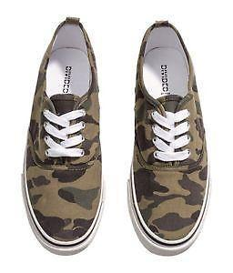

<!--
  Generated template for the ModalProPage page.

  See http://ionicframework.com/docs/components/#navigation for more info on
  Ionic pages and navigation.
-->
<ion-header>
  <ion-navbar>
    <ion-title>
      <span class="title" text-color="custom-color">Product Name</span>
    </ion-title>
    <ion-buttons left>
      <button ion-button (click)="closeModal()">
        <ion-icon class="backIcon" name="arrow-round-back"></ion-icon>
      </button>
    </ion-buttons>
    <ion-buttons right>
      <button ion-button (click)="toggle()">
        <ion-icon class="shareIcon" [name]="visible ? 'heart-outline' :'heart'"></ion-icon>
      </button>
      <button ion-button (click)="share()">
        <ion-icon class="shareIcon" name="share"></ion-icon>
      </button>
    </ion-buttons>
  </ion-navbar>

</ion-header>

<ion-content>
  <ion-slides class="proSlides" pager="true">
    <ion-slide>
      
    </ion-slide>
    <ion-slide>
      
    </ion-slide>
    <ion-slide>
      
    </ion-slide>
  </ion-slides>

  <div>
    <div class="inline">
      <button ion-button class="button" clear>
        <span class="span">6</span>
        <ion-icon class="icons" name="appname-customicon2">
        </ion-icon>
      </button>
    </div>
    <div class="inline">
      <button ion-button class="button" clear>
        <span class="span">0</span>
        <ion-icon class="icons" name="appname-customicon1"> </ion-icon>
      </button>
    </div>
  </div>
  <h1 style="text-align:center;font-weight: bold;">Army Shoes</h1>
  <span style="padding-left:5%;">Description: </span>
  <button class="coupon" ion-button round outline clear >Get Coupon</button>


</ion-content>